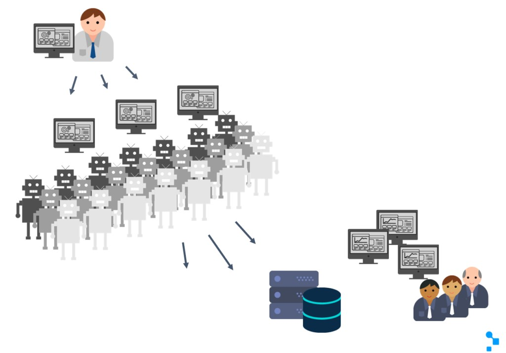

Software Life Cycle, Stages, Breakdown.Static Tests and Dynamic Tests.
TOPIC 5
Eder Geovanni Ramirez Corona
Non-functional Testing.
Non-functional testing of a system evaluates characteristics of systems and software such as usability, performance efficiency or security (ISO/IEC 25010).
Non-functional testing is the testing of “how well” the system behaves.
Contrary to common misperceptions, non-functional testing can and often should be performed at all test levels, and done as early as possible.
The late discovery of non-functional defects can be extremely dangerous to the success of a project.
Non-functional test design and execution may involve special skills or knowledge, such as knowledge of the inherent weaknesses of a design or technology
(e.g., security vulnerabilities associated with particular programming languages) or the particular user base (e.g., the personas of users of healthcare facility management systems). (Klaus et al., 2021)
Usability testing.
Validating how well a customer can use a system or web application to complete a task. (IBM, 2019)
Performance testing.
Testing how the software performs under different workloads. Load testing, for example,
is used to evaluate performance under real-life load conditions. (IBM, 2019)
Stress testing.
Testing how much strain the system can take before it fails.
Considered to be a type of non-functional testing. (IBM, 2019)
Security testing.
They discover system vulnerabilities and determine that system data and resources are protected from potential intruders. It guarantees that the software system and the application are free from any threat or risk that could cause a loss.
Security testing of any system is focused on finding all possible loopholes and weaknesses in the system that could lead to loss of information or reputation of the organization. (Greyrat, 2022)
Load testing.
Load or volume testing are a subset of performance tests used for software, websites, applications and related systems. It is a non-functional test that simulates the behavior of several users accessing the system simultaneously.
They reproduce the performance, stability, and functionality of the web system under real world conditions, which is why it is one of the final and most crucial types of tests performed before installation. (ZAPTEST, 2022)

Portability testing
Is the type of software testing that is conducted to determine the degree of ease or difficulty with which a software application can be effectively and efficiently transferred from one hardware, software, or environment to another. (Rudeous, 2022b)
Scalability testing
Is a type of non-functional testing in which the performance of a software application, system, network, or process is tested in terms of its ability to increase or decrease the number of user load requests or other similar performance attributes.
It can be carried out at the hardware, software or database level. Scalability testing is defined as the ability of a network, system, application, product,
or process to perform the function correctly when changes are made to the size or volume of the system to meet a growing need. (Rudeous, 2022a)